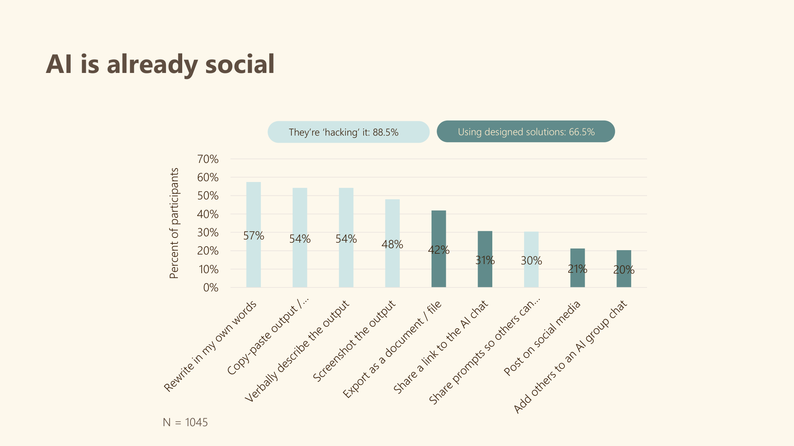
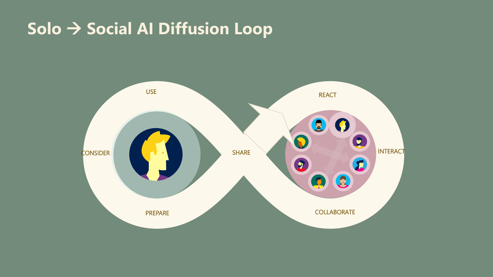
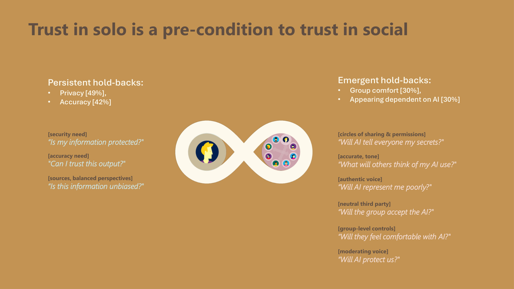
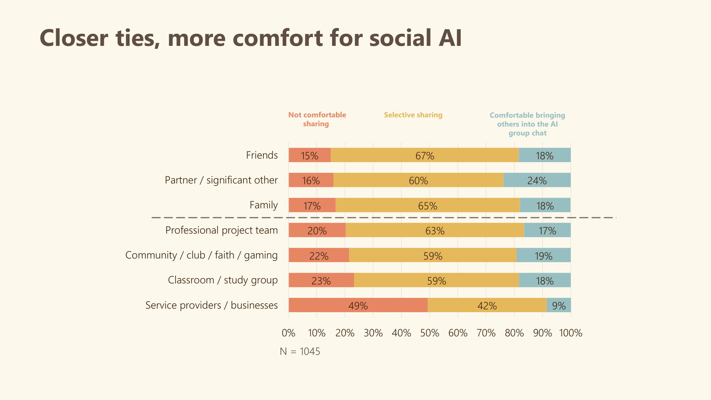
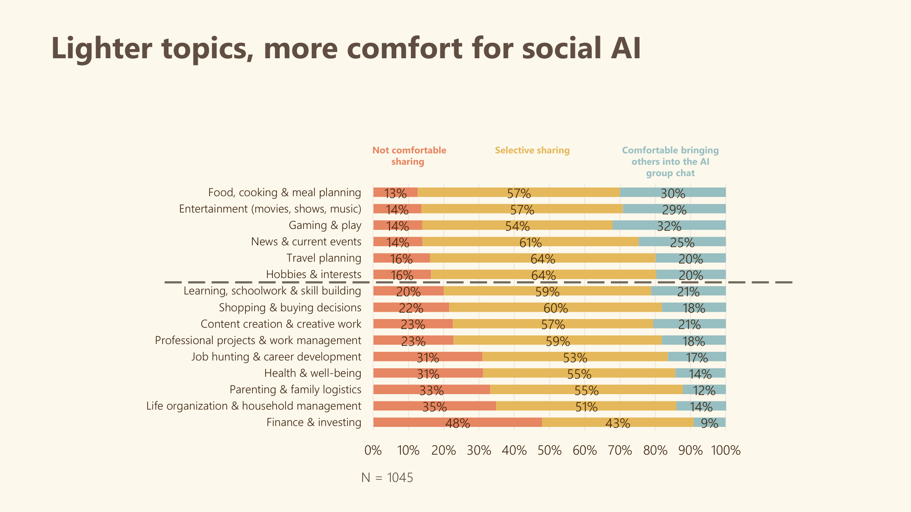

Designing Copilot for Social Spread & Engagement · MAI Discovery Research
Rachele Benjamin & Ming-Li C · May 2026
1. How does AI use spread from one to many?
2. How might AI help groups become better together?
AI use doesn't stay solo for long. Each stage — Use, Consider, Prepare, React, Interact, Collaborate, Share — represents a distinct moment where solo AI becomes social. These moments are where Copilot can intervene with designed support.
88.5% of AI users are already sharing or using AI socially.
Two-thirds are using designed solutions. But 88.5% are "hacking" it — screenshotting, copy-pasting, verbal retelling — losing context, tone, and interactivity every time. The demand is real. The tools aren't there yet.

N = 1,045. The gap between "hacking" (88.5%) and "designed" (66.5%) is the opportunity space.
AI use doesn't stay solo for long. Each stage — Use, Consider, Prepare, React, Interact, Collaborate, Share — represents a distinct moment where solo AI becomes social. These moments are where Copilot can intervene with designed support.

The moment between Prepare and Share is where friction is highest — and where designed tools have the biggest leverage.
Fear of judgment, stigma of using AI.
Users take screenshots that effectively flatten otherwise dynamic conversations.
AI output doesn't sound like “me.”
People need social feedback to validate that sharing AI was worthwhile.
People need social feedback to validate that sharing AI was worthwhile.

Before anyone will bring AI into a shared space, they need to feel confident it represents them accurately, protects their information, and won't undermine them in front of others.
Trust is a layered need — personal trust in AI must precede group-level trust.

Comfort correlates with relationship closeness.

Comfort correlates with topic weight.
| Group | Top 3 topics | Signature scenarios |
|---|---|---|
| 👫 Partners | Travel Planning, Food & Meals, Life Organization | Garden project, Family trip, Real estate research |
| 👥 Friends | Travel Planning, News & Events, Food & Meals | Road trip, Dinner out, Sports chat |
| 👨👩👧 Family | Food & Meals, Health, Productivity | Meal planning, Health queries, Household logistics |
| 💼 Teams | Productivity & Projects, Learning, News | Work presentation, Study group, Volunteer crew |
Each opportunity addresses a distinct moment in the diffusion loop. Together they form a coherent experience strategy.
We gave MAI a research-backed framework — the Solo→Social AI Diffusion Loop — with four clearly scoped opportunity areas.
This research was conducted across US and Japan markets, making it the first cross-cultural baselines for social AI behavior within Microsoft.
Email me for the full story →Led 35 studies across Edge (Consumer, Enterprise), Shopping, Copilot, GroupMe, Character, Read aloud, Bing, and more.
Defining & explaining 'uncanny' feelings.
Attitudes towards democracy.